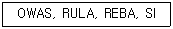
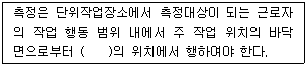
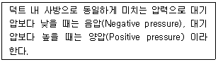

산업위생관리산업기사 (2007-03-04 기출문제)
1과목: 산업위생학 개론
1. 다음 중 직업병을 일으키는 물리적인 원인에 해당되지 않는 것은?
- 온도
- 유해광선
- 이상기압
- 유기용제
(정답률: 87%)

2. 사업장내에서 근골격계질환의 특징으로 틀린 것은?
- 자각증상으로 시작된다.
- 환자 발생이 집단적이다.
- 손상의 정도 측정이 용이하다.
- 회복과 악화가 반복적이다.
(정답률: 78%)
3. NIOSH 에서는 중량물 취급 작업에 대하여 두 가지 권고치, 즉 감시기준(AL)과 최대 허용한계(MPL)을 설정하였다. 이 두 가지 기준의 관계가 올바른 것은?
- MPL = 2×AL
- MPL = 3×AL
- MPL = 4×AL
- MPL = 5×AL
(정답률: 89%)
4. 다음 약어의 용어들은 무엇을 평가하는데 사용되는가?

- 작업장 국소 및 전체 환기효율 비교
- 직무 스트레스 정도
- 누적외상성 질환의 위험요인
- 작업강도의 정량적 분석
(정답률: 76%)
5. 영국의 외과의사로 직업성 암을 최초로 발견하였고 어린이 굴뚝청소부에게 발생한 음낭암의 원인물질을 검댕(soot) 이라고 규명한 사람은?
- B. Ramazzini
- George Baker
- Percivall Pott
- Alice Hamilton
(정답률: 90%)
6. 피로한 근육과 정상근육의 근전도(EMG)를 측정했을 때 피로한 근육에 나타나는 현상으로 틀린 것은?
- 저주파수(0~40Hz)에서는 힘의 증가
- 고주파수(40~200Hz)에서는 힘의 감소
- 평균 주파수의 감소
- 총전압의 감소
(정답률: 78%)
7. 산업피로에 관한 설명으로 알맞지 않는 것은?
- 정신적, 육체적 노동 부하에 반응하는 생체의 태로 라 할 수 있다.
- 피로는 가역적인 생체변화이다.
- 정신적 피로와 신체적 피로는 일반적으로 구별하기 어렵다.
- 피로의 정도는 객관적 판단이 용이하다.
(정답률: 92%)
8. 질병발생의 요인을 제거하면 질병발생이 얼마나 감소될 것인가를 말해주는 위험도는?
- 상대위험도
- 절대위험도
- 비교위험도
- 기여위험도
(정답률: 73%)
9. 어떤 공장에서 250명의 근로자가 1년 동안 작업하는 가운데 21건의 재해가 발생하였다. 이 때 공장에서 발생한 재해의 도수율은? (단, 연간 작업일수는 290일, 1일 근로시간은 8시간으로 한다.)
- 29.76
- 36.21
- 42.26
- 48.51
(정답률: 89%)
10. ACGIH 에서는 작업대사량에 따라 작업강도를 3 가지로 구분하였다. 심한 작업(heavy work)일 경우 작업대사량은 어느 정도 되는가?
- 200~350 kcal/h
- 350~500 kcal/h
- 500~750 kcal/min
- 750~1000 kcal/min
(정답률: 48%)
11. 직업성 요통 발생에 관여되는 요인 중 거리가 먼 것은?
- 근로자의 육체적 조건
- 작업장의 소음
- 작업습관과 개인의 생활태도
- 물리적 환경요인(작업빈도, 물체의 위치, 무게 등)
(정답률: 85%)
12. 재해 도수율과 연천인율과의 일반적 관계를 올바르게 나타낸 것은?
- 연천인율은 재해도수율에 1.4를 곱한 값이다.
- 연천인율은 재해도수율에 1.4를 나눈 값이다.
- 연천인율은 재해도수율에 2.4를 곱한 값이다.
- 연천인율은 재해도수율에 2.4를 나눈 값이다.
(정답률: 67%)
13. 특수 건강진단을 실시하지 않아도 되는 직업은?
- 소음·진동작업
- 방사선 작업
- 고온 및 저온작업
- 유해광선
(정답률: 74%)
14. 다음 중 피로의 발생 메커니즘에 관한 설명 중 적합하지 않은 것은?
- 산소, 영양소 등 어네지원의 소모에 기여한다.
- 신진대사에 의하여 노폐물, 즉 피로물질의 체내축적에 기인한다.
- 근육 내 글리코겐량의 증가에 기인한다.
- 여러 가지 신체기능의 저하에 기인한다.
(정답률: 84%)
15. 열사병의 가장 중요한 원인은?
- 혈액 중의 염분농도 저하
- 순환기계 부조화
- 뇌 온도 상승에 의한 중추신경 마비
- 간기능 장해
(정답률: 76%)
16. 다음 중 레이노 현상(Raynaud's Phenonmenon)을 악화 시키는 중요한 요소는?
- 고열
- 한냉
- 영양
- 소음
(정답률: 78%)
17. 다음 중 작업대사율(RMR)에 관한 식으로 옳은 것은?
- PMR = 작업에 소요된 열량 - 안정시 열량 / 작업에 소요된 열량
- PMR = 작업 대사량 – 기초 대사량 / 기초 대사량
- PMR = 작업 대사량 / 기초 대사량
- PMR = 기초 대사량 / 작업 대사량
(정답률: 62%)
18. NIOSH 에서는 권장 하중 한계(RWL)와 최대 허용 한계(MPL)에 따라 중량물 취급 작업을 분류하고, 각각의 대책을 권고하고 있는데 MPL을 초과하는 경우에 대한 대책으로 적절한 것은?
- 반드시 공학적 방법을 적용하여 중량물 취급작업을 다시 설계한다.
- 적절한 근로자의 선택과 적정배치 및 훈련, 그리고 작업방법의 개선이 필요하다.
- 대부분의 정상근로자들에게 적절한 작업조건으로 현 수준을 유지한다.
- 문제있는 근로자를 적절한 근로자로 교대시킨다.
(정답률: 74%)
19. 다음 중 상시근로자가 1,000명인 경우 산업안전보건법에서 정하는 업종별로 선임하여야 하는 보건관리자의 인원수가 잘못 연결된 것은?
- 1차 금속산업 - 2명
- 가구제조업 - 2명
- 광업 - 3명
- 육상운송업 - 1명
(정답률: 69%)
20. 생물학적 노출지수(BEI)에 관한 설명이다. 잘못된 것은?
- 유해물질의 대사산물, 유해물질 자체 및 생화학적 변화 등을 총칭한다.
- 시료는 소변, 호기 및 혈액 등이 주로 이용된다.
- 혈액에서 휘발성 물질의 생물학적 노출지수는 동맥중의 농도를 말한다.
- 배출이 빠르고 반감기가 5분 이내의 물질에 대해서는 시료 채취시기가 대단히 중요하다.
(정답률: 67%)
2과목: 작업환경측정 및 평가
21. 등가소음수준을 측정할 때 미국산업안전보건청(OSHA)에서 채택하고 있는 exchange rate(dB)는? (단, 적분형 소음기 사용)
- 2
- 3
- 4
- 5
(정답률: 72%)
22. 빛파장의 단위로 사용되는 Å(Angstrom)을 국제표준 단위계(SI)로 바르게 나타낸 것은?
- 10-6 m
- 10-8 m
- 10-10 m
- 10-12 m
(정답률: 36%)
23. 아세톤(분자량=58.2)이 함유된 공기를 0.2L/분으로 40분동안 채취하여 아세톤량을 분석한 결과 5.2mg이었다. 공기중 아세톤 농도는 몇 ppm인가? (단, 25℃, 1기압 기준)
- 246
- 273
- 321
- 394
(정답률: 70%)
24. 다음은 고열측정에 관한 기준이다. ( )안에 알맞은 내용은?

- 50센티미터 이상, 120센티미터 이하
- 50센티미터 이상, 150센티미터 이하
- 80센티미터 이상, 120센티미터 이하
- 80센티미터 이상, 150센티미터 이하
(정답률: 50%)
25. 고열측정을 위한 습구온도 측정시간기준으로 적절한 것은?
- 자연습구온도계 15분 이상
- 자연습구온도계 25분 이상
- 아스만통풍건습계 15분 이상
- 아스만통풍건습계 25분 이상
(정답률: 62%)
26. 작업환경 측정의 표시단위에 대한 연결이 잘못된 것은?
- 분진(석면분진포함) : mg/m3
- 화학적 인자의 흄 : ppm, mg/m3
- 고열(복사열포함) : 습구흑구온도지수를 구하여 섭씨 온도로 표시
- 화학적 인자의 증기 : ppm, mg/m3
(정답률: 79%)
27. 세기 Io의 단색광이 정색액을 통과하여 그 광의 70%가 흡수되었을 때의 흡광도는?
- 0.72
- 0.62
- 0.52
- 0.42
(정답률: 74%)
28. pH 2, pH 4 인 두 수용액을 수산화나트륨으로 각각 중화시킬 때 중화제 NaOH의 투입량은 어떻게 되는가?
- pH 4인 경우 보다 pH 2가 2배 더 소모된다.
- pH 4인 경우 보다 pH 2가 100배 더 소모된다.
- pH 2인 경우 보다 pH 4가 2배 더 소모된다.
- pH 2인 경우 보다 pH 4가 100배 더 소모된다.
(정답률: 41%)
29. 2차 표준기구로 가장 적정한 것은?
- 가스치환병
- 흑연 피스톤 미터
- 습식 테스트 미터
- 폐활량계
(정답률: 78%)
30. 다음 중 검지관의 장점에 대한 설명으로 틀린 것은?
- 사용이 간편하다.
- 특이도가 높다.
- 반응시간이 빠르다.
- 숙련된 산업위생전문가가 아니더라도 어느 정도 숙지하면 사용할 수 있다.
(정답률: 85%)
31. 다음은 습구흑구온도지수(WBGT)를 사용하여 옥외작업장의 고온의 허용기준을 산출하는 공식으로 알맞은 것은? (단, 태양광선이 내리쬐지 않는 장소)
- (0.7×자연습구온도)＋(0.2×흑구온도)＋(0.1×건구온도)
- (0.7×자연습구온도)＋(0.2×건구온도)＋(0.1×흑구온도)
- (0.7×자연습구온도)＋(0.3×흑구온도)
- (0.7×자연습구온도)＋(0.3×건구온도)
(정답률: 60%)
32. 유량, 측정시간, 회수율 및 분석 등에 의한 오차가 각각 15, 3, 9 및 5% 일 때 누적오차(%)는?
- 약 14.5
- 약 16.5
- 약 18.5
- 약 20.5
(정답률: 87%)
33. 일정한 압력조건에서 부피와 온도가 비례한다는 표준가스 법칙은?
- 보일의 법칙
- 샤를의 법칙
- 게이의 법칙
- 루삭의 법칙
(정답률: 50%)
34. 개인시료채취를 위해 개인시료채취기를 사용할 때 적용되는 근로자의 호흡위치의 정의로 가장 적정한 것은?
- 호흡기를 중심으로 직경 30cm인 반구
- 호흡기를 중심으로 반경 30cm인 반구
- 호흡기를 중심으로 직경 45cm인 반구
- 호흡기를 중심으로 반경 45cm인 반구
(정답률: 80%)
35. 충격소음에 관한 정의로 가장 알맞은 것은? (단, 노동부 고시 기준)
- 소음이 1초 이상의 간격을 유지하면서 최대음압수준이 120dB(A) 이상인 소음
- 소음이 1초 이상의 간격을 유지하면서 최대음압수준이 130dB(A) 이상인 소음
- 소음이 10초 이상의 간격을 유지하면서 최대음압수준이 120dB(A) 이상인 소음
- 소음이 10초 이상의 간격을 유지하면서 최대음압수준이 130dB(A) 이상인 소음
(정답률: 71%)
36. 활성탄관에 비하여 실리카겔관(흡착)을 사용하여 채취하기 용이한 시료는?
- 알코올류
- 방향족 탄화수소류
- 나프타류
- 니트로벤젠류
(정답률: 70%)
37. 0.2 M의 KOH(분자량=56)를 2 L 제조하고자 한다. 소요되는 KOH 양은 몇g 인가?
- 20.2
- 22.4
- 24.5
- 26.8
(정답률: 59%)
38. 여과포집에 사용되는 여과재의 조건으로 틀린 것은?
- 포집대상 입자의 입도분포에 대하여 포집효율이 높을 것
- 포집시의 흡인저항은 될 수 있는 대로 낮을 것
- 충분한 흡습률을 유지할 것
- 될 수 있는 대로 가볍고 1매당 무게의 불균형이 적을 것
(정답률: 62%)
39. 다음의 여과포집 원리 중 공기흐름이 바뀔 때 방향의 변화를 따르지 못한 입자의 방향지향성 때문에 나타나는 채취 원리는?
- 차단
- 확산
- 관성충돌
- 체(sieving) 거름
(정답률: 72%)
40. 동일(유사)노출군을 가장 세분하여 분류하는 방법의 기준으로 가장 적합한 것은?
- 공정
- 작업범주
- 조직
- 업무
(정답률: 42%)
3과목: 작업환경관리
41. 고압작업장에서 감압병을 예방하기 위해서 질소 대신에 무슨 가스로 대치된 공기를 흡입하도록 해야 하는가?
- 헬륨
- 메탄
- 아산화질소
- 일산화질소
(정답률: 90%)
42. 다환방향족 탄화수소류(PAH)에 관한 설명으로 틀린 것은?
- 담배의 흡연 또는 연소공정에서 주로 생성된다.
- 비극성의 지용성화합물로 소화관을 통하여 쉽게 흡수된다.
- 대사중에 배설이 되지 않는 발암성 물질인 알데히드를 생성한다.
- PAH는 대사가 거의 되지 않는 방향족 고리로 구성되어 있다.
(정답률: 40%)
43. 어떤 근로자가 음압수준이 100dB(A)인 작업장에 NRR 인 27인 귀마개를 착용하였다. 이 근로자가 노출되는 음압수준은 얼마이겠는가? (단, OSHA 방법으로 계산)
- 73.0dB(A)
- 86.5dB(A)
- 90.0dB(A)
- 95.5dB(A)
(정답률: 76%)
44. 파장으로서 방사선의 특징이 아닌 것은?
- 간섭을 일으킨다.
- 물질과 만나면 반사, 굴절, 확산 될 수 있다.
- 물질과 만나면 흡수 또는 산란된다.
- 자장이나 전장에 영향을 받는다.
(정답률: 45%)
45. 저온에 의한 2차적인 생리반응을 맞게 설명한 것은?
- 저온환경에서는 조직대사가 증가되어 식욕이 떨어진다.
- 저온환경에서는 근육활동이 감소하여 식욕이 떨어진다.
- 말초혈관의 수축으로 표면조직의 냉각이 온다.
- 피부혈관 수축으로 혈류량이 감소함으로 혈압이 일시적으로 저하된다.
(정답률: 50%)
46. 수은 작업장의 작업환경관리대책으로 적합하지 못한 것은?
- 수은 주입과정을 자동화 시킨다.
- 수거한 수은은 물통에 보관한다.
- 바닥은 다공질의 재료를 사용하여 수은이 외부로 노출되는 것을 막는다.
- 실내온도를 가능한 한 낮게 유지시키고 일정하게 유지 시킨다.
(정답률: 68%)
47. 고압환경에서 발생되는 2차적인 가압현상(화학적 장해)에 해당되지 않는 것은?
- 황화합물 중독
- 질소마취
- 이산화탄소 작용
- 산소중독
(정답률: 80%)
48. 소음을 감소시키기 위한 대책이다. 이 중 적합하지 않은 것은?
- 소음을 줄이기 위하여 병타법을 용접법으로 바꾼다.
- 소음을 줄이기 위하여 프레스법을 단조법으로 바꾼다.
- 기계의 부분적 개량을 노즐, 버너 등을 개량하거나 공명부분을 차단한다.
- 압축공기 구동기기를 전동기기로 대체한다.
(정답률: 45%)
49. 질소의 지방 용해도는 물에 대한 용해도 보다 몇 배가 큰 가?
- 2배
- 5배
- 10배
- 20배
(정답률: 54%)
50. 작업장의 조명관리에 관한 설명이다. 틀린 것은?
- 간접조명은 조도가 균일하며 실내의 입체감이 커지는 장점이 있다.
- 전반조명이란 광원을 일정한 간격과 높이로 설치하여 균일한 조도를 얻기 위함이다.
- 직접조명은 조명기구가 간단하여 기구의 효율이 좋고 설치비용이 저렴하다.
- 국소조명은 밝고 어둠의 차이가 많아 눈부심을 일으켜 눈을 피로하게 한다.
(정답률: 39%)
51. 광원으로부터 나오는 빛의 세기인 광도의 단위는?
- 촉광
- 루멘
- 럭스
- 람버스
(정답률: 54%)
52. 잠수부가 수심 20m 인 곳에서 작업하는 경우 이 근로자에게 작용하는 절대압은?
- 1기압
- 2기압
- 3기압
- 4기압
(정답률: 79%)
53. 다음 중 가스 상태에 있어서 비중이 작은 물질은?
- 포스겐
- 암모니아
- 일산화탄소
- 이산화탄소
(정답률: 64%)
54. 빛의 반사율에 대한 설명으로 틀린 것은?
- 대부분의 반사율은 45~65% 정도이다.
- 조도에 대한 휘도의 비로 표시한다.
- 완전히 검은 평면의 반사율은 0 이다.
- 빛을 받은 평면에서 반사되는 빛의 밝기를 말한다.
(정답률: 57%)
55. 고온환경에서 육체노동에 종사할 때 일어나기 쉬운 열적장해로 말초혈관 확장에 따른 요구 증대 만큼의 혈관운동조절이나 심박출력의 증대가 없을 때 또는 탈수로 말미암아 혈장량이 감소할 때 발생되는 것은?
- 열경련
- 열사병
- 열쇠약
- 열피로
(정답률: 38%)
56. ACGIH 에 의한 발암물질의 구분기준으로 'A4'에 해당되는 것은?
- 인체 발암성 확인물질
- 동물발암성 확인물질, 인체 발암성 모름
- 인체 발암성 미분류 물질
- 인체 발암성 미의심 물질
(정답률: 40%)
57. 공학적 작업환경관리 대책 중 격리에 해당하지 않는 것은?
- 저장탱크들 사이에 도랑 설치
- 소음발생 작업장에 근로자용 부스 설치
- 방사선 동위원소 취급을 밀폐장소에서 설치
- 페인트 분사공정을 함침(dipping)작업으로 실시
(정답률: 72%)
58. 방독마스크의 흡수제의 재질로 적장하지 않은 것은?
- fiber glass
- silica gel
- activated carbon
- soda lime
(정답률: 72%)
59. 미국 ACGIH에서 모든 입자상물질에 대하여 침착하는 부위 및 먼지 입경에 따라 분류하는 것 중 가스교환지역인 폐포나 폐기도에 침착되었을 때 독성을 나타내는 입자상물질의 크기로 50%가 침착되는 평균입자의 크기가 10μm 인 것은?
- 흡입성 입자상 물질
- 흉곽성 입자상 물질
- 호흡성 입자상 물질
- 폐포성 입자상 물질
(정답률: 84%)
60. 의식상실과 중추신경계장해가 발생하는 산소결핍 작업장 조건은?
- 공기 중 산소농도는 10% 인 작업장
- 공기 중 산소농도는 12% 인 작업장
- 공기 중 산소농도는 14% 인 작업장
- 공기 중 산소농도는 16% 인 작업장
(정답률: 67%)
4과목: 산업환기
61. 덕트의 설치를 결정할 때 유의사항이 아닌 것은?
- 가급적 원형 덕트를 사용한다.
- 곡관의 수를 적게 한다.
- 청소구를 설치한다.
- 곡관의 곡률 반경을 작게 한다.
(정답률: 79%)
62. 작업장내 설치된 직사각형 덕트의 길이는 20m 이고, 가로는 0.28m, 세로는 0.21m 이며, 속도압은 15mmH2O 이다. 이러한 덕트의 마찰계수가 0.0⑤ 이라면 압력손실은 몇 mmH2O 인가?
- 1.43
- 2.85
- 3.90
- 6.25
(정답률: 29%)
63. 작업장의 국소환기 전체의 압력손실이 220mmH2O 이고, 송풍기의 총 공기량이 1,000m3/min, 송풍기의 효율이 75%일 때 송풍기에 필요한 동력은 몇 kW인가?
- 47.93
- 55.69
- 60.69
- 66.76
(정답률: 60%)
64. 다음은 무엇에 대한 설명인가?

- 전압
- 정압
- 동압
- 속도압
(정답률: 82%)
65. 송풍기 법칙에 대한 설명 중 옳은 것은?
- 풍량은 송풍기의 회전속도에 반비례한다.
- 풍량은 송풍기의 회전속도에 정비례한다.
- 풍량은 송풍기의 회전속도에 제곱에 비례한다.
- 풍량은 송풍기의 회전속도의 세제곱에 비례한다.
(정답률: 61%)
66. 150℃, 720mmHg 상태에서의 100m3 인 공기는 표준상태(21℃, 1기압)에서는 약 얼마의 부피로 변하겠는가?
- 47.8m3
- 57.2m3
- 65.8m3
- 77.2m3
(정답률: 59%)
67. 덕트의 조도를 나타내는 상대조도에 대한 설명으로 옳은 것은?
- 절대 표준조도를 유체밀도로 나눈 값이다.
- 절대 표면조도를 마찰손실로 나눈 값이다.
- 절대 표면조도를 공기유속으로 나눈 값이다.
- 절대 표면조도를 덕트직경으로 나눈 값이다.
(정답률: 66%)
68. 작업장 내의 발생기류가 높고 유해물질이 활발하게 발생하는 작업조건의 스프레이 도장, 용기 충진, 콘베이어 적재, 분쇄기 작업공정 등에서 후드의 제어속도로 적절한 것은? (단, ACGIH) 권고치 기준이다.)
- 2m/s
- 4m/s
- 5m/s
- 10m/s
(정답률: 23%)
69. 국소배기장치에서 후드의 유입계수가 0.8, 속도압이 45mmH2O 라면 후드의 압력손실은 약 몇 mmH2O 인가?
- 11.2
- 14.6
- 21.9
- 25.3
(정답률: 45%)
70. 일반적으로 사용되는 국소배기장치의 계통도를 바르게 나열한 것은?
- 후드 → 덕트 → 공기정화장치 → 송풍기
- 후드 → 공기정화장치 → 덕트 → 송풍기
- 덕트 → 공기정화장치 → 송풍기 → 후드
- 후드 → 덕트 → 송풍기 → 공기정화장치
(정답률: 86%)
71. 축류송풍기 중 프로펠러 송풍기에 관한 설명으로 틀린 것은?
- 구조가 간단하고 값이 저렴하다.
- 많은 양의 공기를 값싸게 이송시킬 수 있다.
- 압력손실이 비교적 큰 곳에서도 송풍량의 변화가 적은 장점이 있다.
- 국소배기용보다는 압력손실이 비교적 작은 전체 환기용으로 사용해야 한다.
(정답률: 73%)
72. 송풍기의 풍량 조절법에 속하지 않는 것은?
- 회전수 변화법
- Vane Control법
- Damper 부착법
- 송풍기 풍향 변경법
(정답률: 60%)
73. 메틸에틸케톤이 5L/h 로 발산되는 작업장에 대해 전체 환기를 시키고자 할 경우 필요 환기량(m3/min)은? (단, 메틸에틸케톤 분자량은 72.06, 비중은 0.8⑤, 21℃, 1기압 기준, 안전계수 2, TLV는 200ppm 임)
- 225
- 245
- 265
- 285
(정답률: 47%)
74. 아세톤이 공기 중에 10,000 ppm으로 존재한다. 아세톤 증기비중이 2.0 이라면 이 때 혼합물의 유효비중은?
- 0.98
- 1.01
- 1.01
- 1.07
(정답률: 41%)
75. 다음 중 전기집진장치의 장점이 아닌 것은?
- 가스상 오염물질의 처리가 용이하다.
- 고온 가스를 처리할 수 있다.
- 압력손실이 낮아 송풍기의 가동비용이 저렴하다.
- 넓은 범위의 입경과 분진농도에 집진효율이 높다
(정답률: 31%)
76. 싸이클론의 집진 효율을 향상시키기 위해 Blow down 방법을 이용할 때 싸이클론의 더스트박스 또는 멀티싸이클론의 호퍼부에서 처리배기량의 몇 %를 흡입하는 것이 가장 이상적인가?
- 1 ~ 3%
- 5 ~ 10%
- 15 ~ 20%
- 25 ~ 30%
(정답률: 60%)
77. 수공구에 부착하는 저유량 - 고유속 후드의 단점과 가장 거리가 먼 것은?
- 필요 환기량이 상승한다.
- 소음이 크다.
- 덕트 내 마모가 심하다.
- 정전기가 발생한다.
(정답률: 62%)
78. 후드의 개방면에서 측정한 면속도가 제어속도가 되는 후드의 형태는?
- 포위형 후드
- 포집형 후드
- 푸쉬풀 후드
- 캐노피 후드
(정답률: 52%)
79. 관 내경이 200mm 인 직관을 통하여 100m3/min 의 공기를 송풍할 때 관내 풍속은 약 몇 m/s 인가?
- 38
- 53
- 68
- 83
(정답률: 58%)
80. Della Valle 유도한 공식으로 외부식 후드의 필요 환기량을 산출할 때 가장 큰 영향을 주는 인자는?
- 후드 모양
- 후드의 재질
- 후드의 개구면적
- 후드로부터의 오염원 거리
(정답률: 58%)